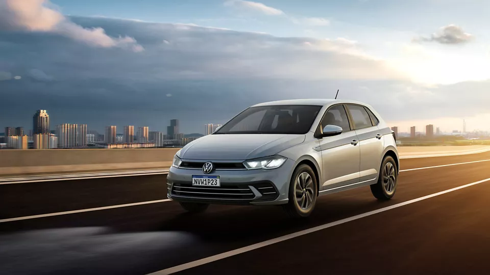
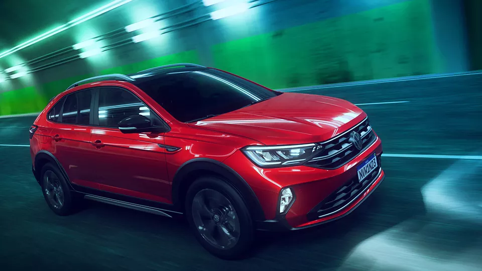
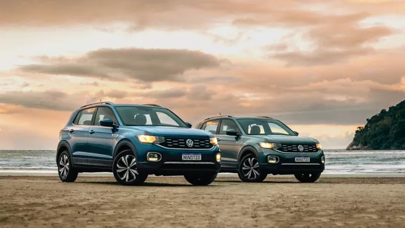
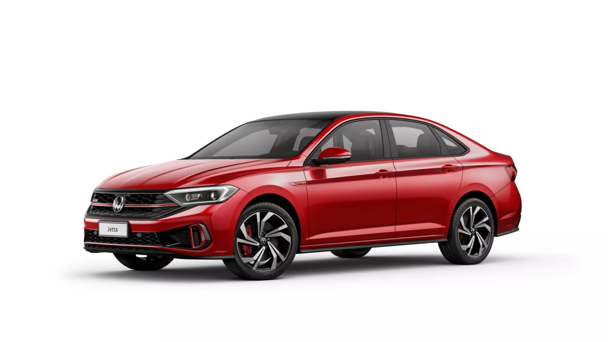

S
      </header>
      <main>
        <section class="hero">
          <h1><em>VOLKSWAGEM</em></h1>
          <h2>Conheça mais sobre a história da marca.</h2>
          <br>
          <a href="https://www.vw.com.br/pt/volkswagen/volkswagen-do-brasil.html" class="button">Saiba mais</a>
        </section>
        <section class="models">
            <h2>Alguns Modelos da Marca</h2>
            <div class="models-card">
              
              <h3>Novo Polo</h3>
              <p>O Novo Polo chega com linhas renovadas e faróis de LED, deixando-o ainda mais moderno e elegante. 
                Com excelente desempenho e tecnologias inovadoras, o Novo Polo certamente é a melhor opção do segmento Hatch</p>
               <a href="https://www.vw.com.br/pt/carros/polo.html" class="button">Tenho interesse</a>
            </div>
            <div class="models-card">
              
              <h3>Nivus</h3>
              <p>Lindo, versátil, moderno e conectado. Muito prazer, eu sou o Volkswagen Nivus!</p>
              <a href="https://www.vw.com.br/pt/carros/nivus.html" class="button">Tenho interesse</a>
            </div>
            <div class="models-card">
              
              <h3>T-Cross</h3>
              <p>Mais que um SUV, um SUVW.
                O T-Cross é o primeiro SUV produzido pela Volkswagen no Brasil. E chegou para revolucionar os padrões do segmento. </p>
                <a href="https://www.vw.com.br/pt/carros/t-cross.html" class="button">Tenho interesse</a>
            </div>
            <div class="models-card">
                
                <h3>Jetta GLI</h3>
                <p>O sedan mais esportivo da categoria
                    O Jetta GLI, destaca-se como o sedan médio mais esportivo da categoria com o motor 350 TSI.
                    Mantendo a aparência esportiva sem perder a elegância, o Jetta GLI continua sendo o superesportivo da sua categoria com 231cv de potência. </p>
                  <a href="" class="button">Tenho interesse</a>
              </div>
          </section>
          <section class="work">
          </section>
      <footer>
        <p>&copy; Bruno Dias, Gabriel Aruajo, Kauã Martins</p>
      </footer>

</body>
</html>